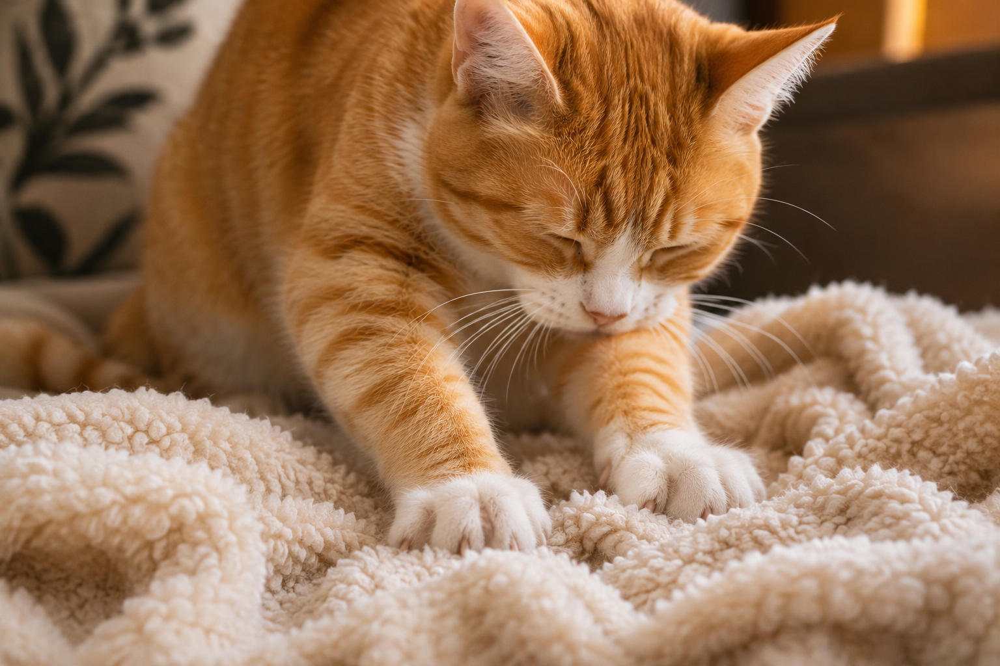
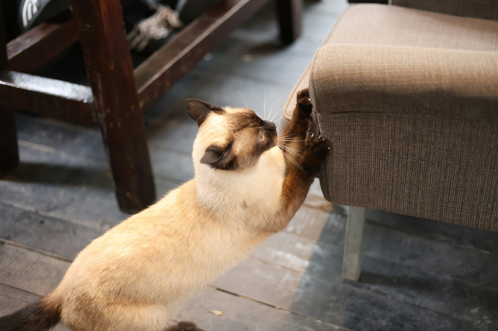
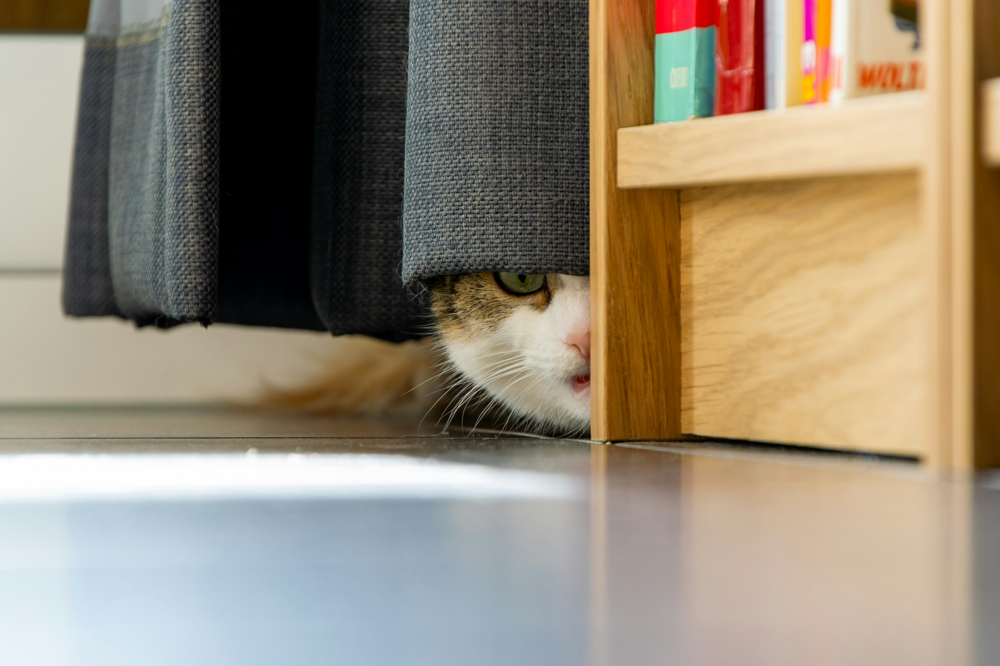
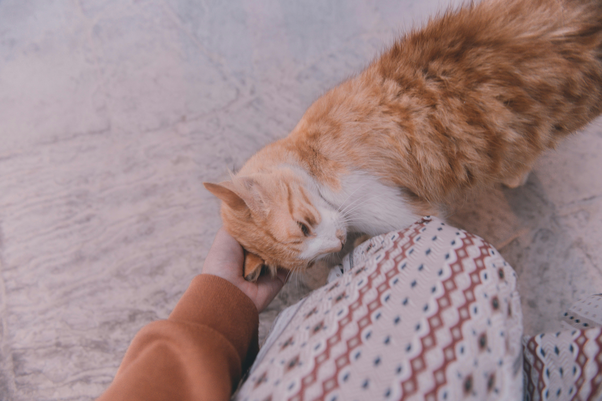
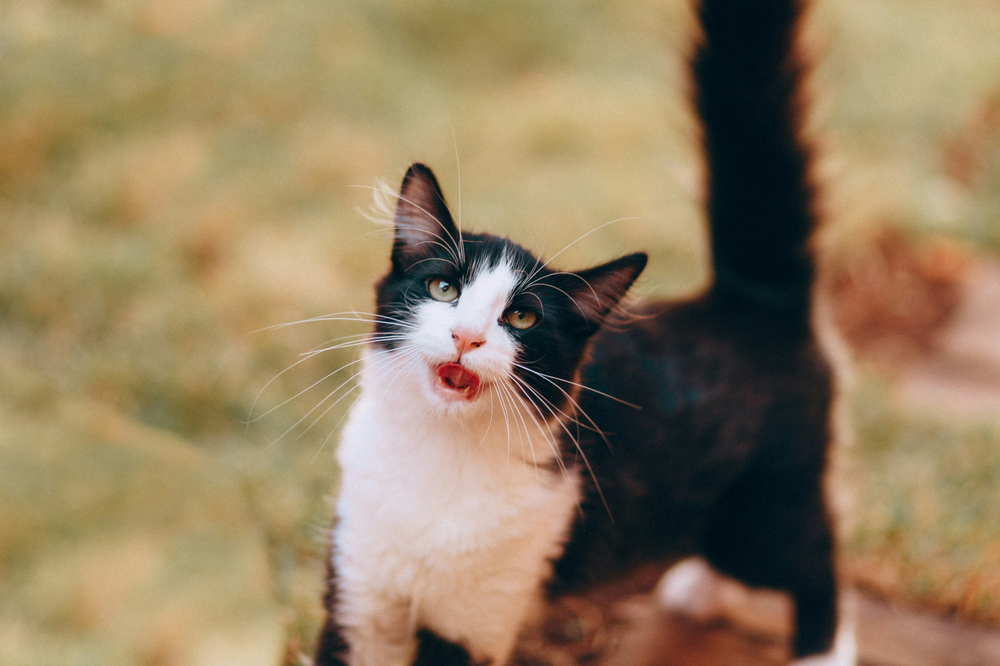

Comfort
Purring
Cats purr primarily when feeling relaxed and secure, but may also purr to soothe themselves when stressed or hurt.
Discover what your cat's gestures, sounds, and habits really mean. Learn to interpret feline communication, nurture positive habits, address emotional stress, and build a lasting bond of trust and companionship.

From soothing purrs to curious tail movements, learn the emotional and instinctual meaning behind your cat's everyday rituals.
Cats purr primarily when feeling relaxed and secure, but may also purr to soothe themselves when stressed or hurt.

Rhythmically pushing paws against blankets or laps stems from kitten nursing instincts and signifies deep relaxation.
An upright tail indicates friendliness and confidence, while a rapid twitch or thrash signals growing irritation.

Scratching maintains sharp claws, stretches back muscles, and leaves visual and scent markers across territory.

Cats naturally seek quiet, sheltered nooks when overwhelmed, frightened, or simply recharging in peaceful solitude.

Rubbing cheeks against people or furniture deposits facial pheromones, expressing trust and marking family territory.

Adult cats rarely meow at other cats; they vocalise specifically to ask humans for meals, greetings, and attention.
Cats express emotion through posture, ear angles, pupil size, and tail movements. Learn their subtle visual vocabulary.
A loose, side-lying posture indicates complete safety, while an arched back or rigid crouch signals apprehension.
Forward-facing ears demonstrate active curiosity; sideways or flattened airplane ears indicate fear or irritation.
A relaxed slow blink is the ultimate feline kiss of trust. Direct, unblinking stares can be perceived as confrontation.
A tail held high with a questioning curved tip signals a happy greeting, while a puffed bottlebrush tail signals fear.
Friendly chirps, contented purrs, assertive yowls, and defensive hisses each communicate distinct emotional states.
Relaxed whiskers pointing outward show calm curiosity; tightly pulled-back whiskers signify stress or defensive focus.
Cats are sensitive to sudden environmental disruptions. Recognize subtle stress markers early to protect their emotional well-being.
Loud vacuum noises, sudden furniture rearrangement, construction, or unfamiliar outdoor scents can spark anxiety.
Excessive fur licking, changes in appetite, frequent hiding, or sudden litter box avoidance indicate distress.
Provide vertical cat trees, covered cubbies, and high shelving where anxious cats can safely view their environment.
Feline pheromone diffusers, quiet background music, and consistent daily schedules significantly ease nervousness.
Stress often triggers urinary distress or avoidance. Ensure multiple clean boxes in quiet, low-traffic areas.
Sudden behaviour shifts often stem from physical pain like urinary tract infections, arthritis, or dental issues.
Most aggression in cats is rooted in fear, pain, or overstimulation. Learn the triggers and how to handle them safely.
Hissing and swatting usually occur when a frightened cat feels trapped without an escape route. Give them distance.
Notice subtle cues like a twitching tail or shifting ears. Stop petting before the cat feels compelled to swat or nip.
Agitation from seeing a stray cat through a window can cause a cat to snap at family members. Close blinds to calm them.
Ankle-pouncing happens when predatory play is misdirected. Redirect their instincts onto wand toys and kickaroo pillows.
Inter-cat staring contests and corridor blocking signal tension. Provide multiple vertical escape routes and resources.
Never shout or physically intervene during cat disputes. Use a blanket, cushion, or clap to break visual focus safely.
Cats learn through patience, immediate rewards, and consistency. Gentle encouragement builds lasting confidence.
Place boxes in quiet, accessible spots. Scoop daily, keep boxes clean, and reward consistent usage gently.
Reward desired behaviours with treats or gentle chin strokes within 2 seconds of the positive action.
Position sturdy sisal posts near rest zones. Rub with catnip and praise your cat enthusiastically when used.
Leave travel carriers open in the living room with soft bedding and treats so carriers represent comfort, not vet visits.
Teach your cat to touch a target stick or come when called using clicker sounds paired with high-value treats.
Keep meal times, play sessions, and lights-out schedules regular to build confidence and reduce behavioral confusion.
Solve unwanted feline habits with simple, compassionate, science-backed environmental adjustments.
Solution: Place tall sisal scratching posts directly next to targeted furniture and apply double-sided tape temporarily.
Solution: Ensure litter is unscented, scoop twice daily, add extra boxes (N+1 rule), and check for urinary pain at the vet.
Solution: Conduct a 15-minute vigorous play hunt right before bedtime, followed immediately by a hearty protein meal.
Solution: Watch for twitching skin or swishing tails. Keep petting sessions brief and stick to cheeks, chin, and head.
Solution: Provide a taller alternative cat tree right next to the kitchen counter so they have an approved viewing perch.
Solution: Re-separate cats temporarily and conduct gradual scent-swapping and meal feedings across closed doors.
Keep your indoor cat physically active, mentally engaged, and fulfilled with simple daily games.
Feather wands and felt ribbons stimulate chase-pounce-catch predatory instincts and prevent boredom.
Make mealtimes engaging by challenging your cat to work mentally for treats and kibble.
Multi-tier cat trees offer vital vertical exercise and elevated territory to observe the room safely.
Provide both vertical posts and horizontal cardboard scratchers to accommodate individual claw preferences.
Cardboard boxes, pop-up tunnels, and paper bags (without handles) offer endless exploratory entertainment.
Dedicate 15 minutes twice a day to focused one-on-one play to relieve pent-up energy and deepen affection.
Clear answers to the most common feline behaviour, communication, and training queries from cat parents.
This is known as petting-induced overstimulation. While cats enjoy affection, their nerve endings can become overwhelmed quickly. Look out for early warning signs such as a twitching tail tip, rippling back skin, or ears turning backwards, and pause petting immediately before they feel the need to bite.
Scratching is a natural instinct to shed claw husks, mark scent, and stretch muscles. Never punish scratching; instead, place a sturdy sisal post right in front of the scratched area, rub it with organic catnip, and apply double-sided pet tape to the furniture temporarily to deter them.
Cats are naturally crepuscular (most active at dusk and dawn). Night zoomies happen when cats have unspent energy. You can shift their schedule by playing vigorously with a wand toy for 15 to 20 minutes before bedtime, followed immediately by their evening meal to trigger their natural hunt-eat-sleep cycle.
In cat language, slow blinking is an unmistakable sign of comfort, peace, and trust. Because closing their eyes in your presence indicates they do not view you as a threat, slow-blinking back at your cat communicates reciprocal affection and safety.
Never introduce cats face-to-face immediately. Keep the newcomer in a separate "safe room" for several days. Swap blankets and toys so they learn each other's scent, feed them on opposite sides of a closed door, and proceed to supervised, positive visual introductions gradually over 1 to 2 weeks.
Understanding your cat's mind is the foundation of lifelong friendship. Explore our breed library, nutrition guides, and grooming advice to give your cat their happiest life.
Understanding Feline Social Behaviour & Bonding
Cats form deep relationships on their own terms. Discover how they interact with companions, humans, and other pets.
Respect Personal Space
Let your cat approach you first. Never corner them for cuddles and always allow a clear retreat path.
Daily Play Sessions
Interactive wand sessions mimic hunting rhythms, burn off nervous energy, and build strong owner camaraderie.
Multi-Cat Harmony
Prevent tension by providing multiple food bowls, water stations, and litter boxes across different rooms.
Secure Safe Territory
Cats thrive when their home environment offers predictable resting spaces, elevated perches, and quiet corners.
Gentle Scent Sharing
Introduce new house guests, blankets, or other pets gradually by sharing scents before visual face-to-face contact.
Trust Through Predictability
Consistent feeding times, calm speech, and gentle handling reassure cautious cats that their surroundings are safe.